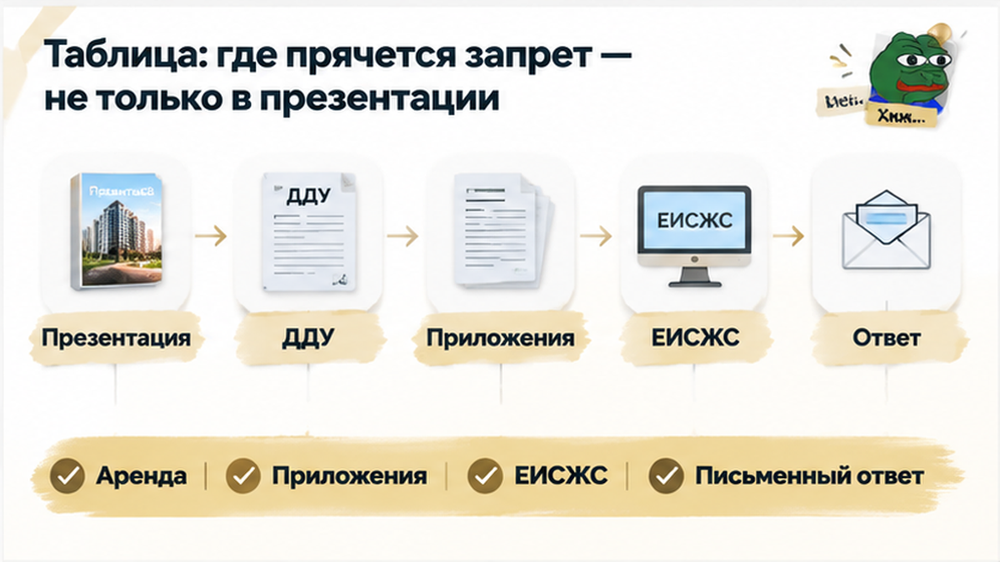
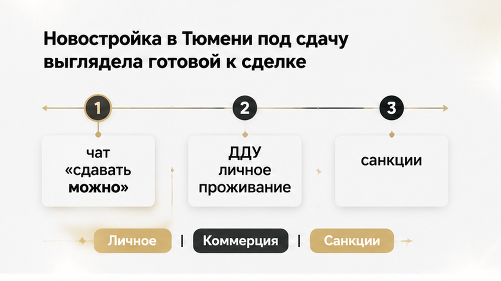
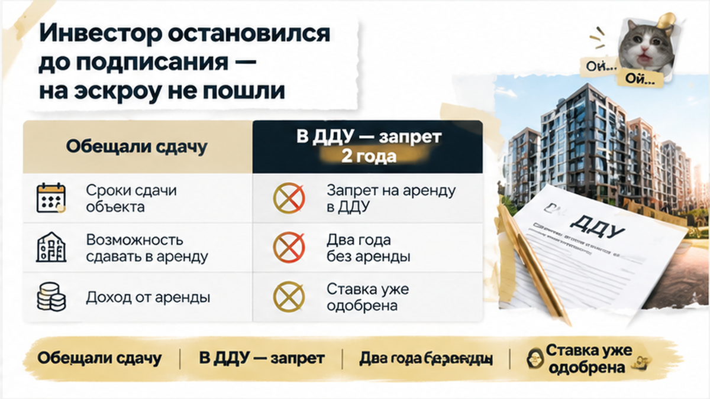
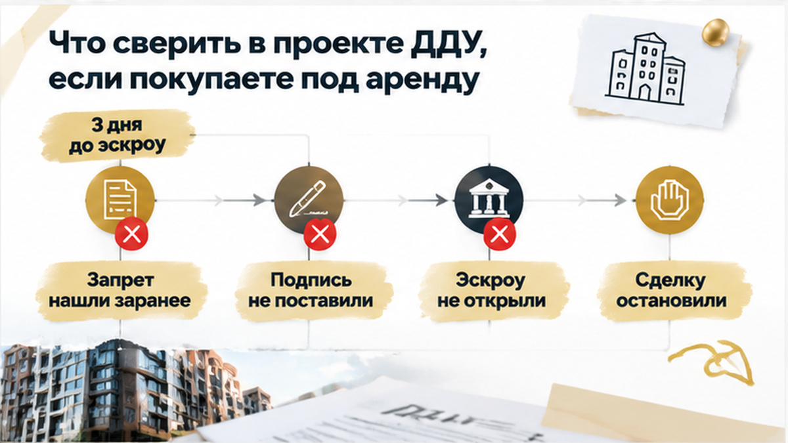

За три дня до открытия эскроу инвестор нашёл в проекте ДДУ запрет сдавать квартиру на 24 месяца — и остановил покупку новостройки в Тюмени. Квартиру выбирали под аренду: ипотека уже одобрена, бронь оформлена, в переписке с менеджером осталось короткое «сдавать можно». А в PDF — личное проживание, ограничение на сдачу и санкции за «коммерческое использование». Не мелочь, которую можно обсудить после получения ключей, а условие, меняющее сам смысл покупки. До подписания оставалось разобраться: что покупатель принимает на себя по договору и подходит ли ему такая квартира вообще.
Покупаете новостройку в Тюмени для себя или под аренду? В Telegram и MAX The Риэлтор разбираем условия, которые стоит увидеть до подписи и перевода денег. Не только ставку и платёж — ещё и то, что написано рядом с ними.

Задача у инвестора была простая: купить квартиру и сдавать. Не переехать самому, не оставить жильё для семьи, а использовать его под аренду. Поэтому возможность найма здесь — не дополнительный плюс. Это основа выбора.
Снаружи всё уже складывалось. Квартира забронирована, банк одобрил ипотеку. На таком этапе легко выдохнуть: «Ну всё, осталось оформить». Основная работа будто позади, впереди — подписи.
Но бронь и одобрение кредита отвечают на разные вопросы. Бронь закрепляет свой этап договорённостей. Банк решает вопрос финансирования. Ни то ни другое не подтверждает, что условия ДДУ подходят под вашу цель покупки. Договор участия в долевом строительстве надо читать отдельно — вместе с обязанностями, ограничениями и приложениями.
Обычный подход: квартира нравится, платёж подходит — можно брать. Профессиональный: сначала сверить, позволяет ли комплект документов реализовать ваш сценарий. Ставка не исправляет договор, по которому квартиру нельзя сдавать.
Для человека, который покупает жильё себе, требование личного проживания на первый взгляд может выглядеть естественно. Для инвестора оно сразу меняет расчёт. И даже покупателю для себя полезно понять, что именно написано: жизненные планы меняются, а подписанные обязательства от этого сами не исчезают.

В переписке ответ был удобный и понятный: «Сдавать можно». Именно то, что требовалось покупателю. Когда такое подтверждение уже есть, проект договора легко принять за формальность: сейчас пришлют документ, где всё согласованное просто записано юридическим языком.
В этой истории получилось иначе. Переписка говорила одно, PDF требовал разбираться с другим. И дело не в том, какое сообщение прозвучало убедительнее. Вопрос — под каким текстом покупателю предлагают поставить подпись.
Повторить «не переживайте, все сдают» было бы недостаточно. Нужен ответ по конкретному пункту: что он запрещает, к чему относится требование личного проживания и какие последствия предусмотрены. Общее обещание не устраняет конкретное противоречие в документах.
Такое расхождение бывает не только с арендой квартиры. В другом разборе земля под тюменским ЖК оказалась в аренде, хотя при бронировании обещали собственность. Принцип тот же: слова из переговоров нужно сопоставлять с документами, а не переносить в них мысленно.
При этом само выражение «коммерческое использование» — ещё не готовый юридический вывод. Нельзя увидеть эти слова и автоматически объявить запрещённым любой найм. Важно прочитать пункт целиком, проверить связанные положения и приложения. В данном проекте было и отдельное ограничение на сдачу, поэтому одним толкованием общего термина вопрос не закрывался.
Профи здесь не успокаивает на автомате и не пугает покупателя. Он отделяет подтверждённое от обещанного. Есть переписка, есть проект договора, между ними обнаружено расхождение. Значит, следующий шаг — получить предметный ответ по тексту, а не торопить подпись только потому, что бронь и ипотека уже готовы.
Инвестор открыл PDF на большом экране. Рядом — переписка с менеджером. В сообщениях всё просто: «сдавать можно». В договоре — личное проживание, ограничение на сдачу и санкции за «коммерческое использование». Покупатель тот же. Квартира та же. А условия уже не сходятся.
Обычный подход здесь: «Менеджер же подтвердил, значит, это стандартный пункт». Профессиональный — остановиться именно на этом месте. Если покупаете под аренду, возможность сдавать квартиру — не пожелание, а основа сделки. Без неё меняется не настроение покупателя, а расчёт, ради которого он вообще выбирал этот лот.
План предполагал доход после передачи квартиры и ремонта. Ограничение отодвигало этот сценарий, тогда как обязательства по будущему кредиту никуда бы не делись. Одобрение ипотеки отвечало на вопрос, готов ли банк финансировать покупку. Но не отвечало на другой: подходит ли покупка инвестору.
Здесь рядом с общей формулировкой стояло конкретное условие о сдаче. Поэтому ещё одного «не переживайте» было недостаточно. Нужен ответ по тексту: что именно покупатель обязуется не делать и почему это расходится с прежним подтверждением менеджера.
Такой же принцип работает, когда ограничивают не аренду, а выход из инвестиции. Мы разбирали похожую точку остановки в материале о пункте в ДДУ перед сделкой. Вопрос один: позволяет ли документ реализовать ваш план, а не только купить понравившуюся квартиру.

Инвестор не стал подписывать договор с расчётом разобраться после получения ключей. Сделку остановили. Деньги на эскроу не ушли.
Это важный финал без эффектного спасения в последний момент. Покупатель увидел расхождение до подписания и не принял условия, которые не подходили его задаче. Он отказался не от новостроек Тюмени, а от конкретного варианта под конкретную стратегию.
С бронью остался отдельный вопрос. Она уже была оформлена, стороны начали обсуждать возврат. Говорить «точно вернут» здесь так же неправильно, как «всё потеряно». Нужно смотреть условия бронирования, переписку и порядок расторжения. Итог этого обсуждения заранее неизвестен.
Но вопрос о брони не делал следующий шаг обязательным. Уже потраченное время, одобрение банка и пройденные согласования — не причина подписывать неподходящий договор. Иначе покупатель продолжает сделку не потому, что она ему нужна, а потому, что жалко останавливаться.
Проект ДДУ в этой истории выполнил свою работу: показал проблему до принятия обязательств. Дальше можно разбирать спорную формулировку с юристом, запрашивать письменный ответ или выбирать другой лот. У покупателя оставалось право решить, какие условия ему подходят. Он им воспользовался.
Если в ДДУ запрещают сдавать квартиру два года, стоит ли подписывать договор ради выгодной ставки или лучше отказаться от такого ЖК?
Обычный подход: сначала выбрать квартиру, оформить бронь, получить одобрение банка. Договор — потом, когда пришлют. Профессиональный подход начинается с другого вопроса: «Эту квартиру можно использовать так, как я планирую?» Если покупаете под сдачу, ответ нужен до бронирования. Не после ремонта, когда уже пора искать жильцов.
Попросите проект ДДУ и приложения заранее. Читайте не только цену, площадь и срок передачи. Откройте разделы о назначении помещения, обязанностях покупателя, порядке пользования и последствиях нарушений. Именно там красивое «подходит для инвестиций» может столкнуться с условием, которое меняет весь расчёт.
Поиск по слову «аренда» — полезное начало. Но не вся проверка. В тексте могут встречаться «личное проживание», «передача третьим лицам», «коммерческое использование», «гостиничные услуги», ограничения на проживание людей, которые не являются собственниками.
Это не синонимы. Запрет гостиничных услуг нельзя без разбора объявить запретом обычного найма. И наоборот: нельзя пропустить прямое ограничение на сдачу только потому, что менеджер назвал его формальностью. Нужны полный пункт, его контекст и документы, на которые он ссылается.
Вопрос «А сдавать точно можно?» слишком удобен для короткого ответа. Лучше поставить его иначе:
Сопоставьте присланный файл с образцом договора в ЕИСЖС. Посмотрите проектную декларацию и доступные приложения. Совпадение названия ЖК ещё не означает совпадения всех условий. Важно проверить документы именно по вашему варианту, а не успокоиться тем, что знакомый уже покупал в этом доме.
Сохраните PDF с датой получения и переписку об аренде. Попросите письменное разъяснение и передайте комплект юристу по вашей сделке. Задача — понять последствия до подписи, а не собрать успокаивающие сообщения.
До подписи можно спокойно сверить пункты про аренду в проекте ДДУ. Напишите в Telegram или MAX — начнём с PDF и переписки, а не с обещания «все сдают».
Та же логика работает, когда ограничение касается выхода из инвестиции. В разборе запрета на перепродажу в проекте ДДУ ключевой вопрос похожий: подходит ли покупателю не только квартира, но и условия сделки.

Презентация отвечает за привлекательность предложения. Договор — за условия, которые покупатель принимает. Не стоит требовать от рекламного буклета юридической полноты. Но и заменять им проверку документов нельзя. Вот короткий маршрут по комплекту перед подписанием.
| Где смотреть | Что искать | Какой вопрос задать |
|---|---|---|
| Основной текст ДДУ | Назначение помещения, порядок пользования, передача третьим лицам | Есть ли прямое ограничение на сдачу и как указан его срок? |
| Приложения к ДДУ | Правила проживания, порядок доступа, дополнительные обязанности | Не вынесено ли существенное условие в отдельный документ? |
| Проектная декларация и документы в ЕИСЖС | Описание объекта, назначение и связанные документы | Совпадают ли опубликованные документы с присланным комплектом? |
| Переписка и презентация | Обещания о сдаче, доходности и свободе использования | Подтверждает ли договор то, что обещали при выборе? |
| Раздел о нарушениях | Штрафы, требования прекратить использование, другие последствия | Что предусмотрено, если использование признают нарушением условий? |
«Да этот пункт всё равно не работает» — не готовая стратегия покупки. Даже если условие вызывает юридические сомнения, покупателю важно заранее понять, с чем он может столкнуться. Выгодная ставка отвечает на вопрос о стоимости кредита. Она не отвечает на вопрос о возможности сдавать квартиру.
Пауза перед подписанием — это управление сделкой, а не поражение. Можно запросить разъяснения, проверить ограничения, пересчитать экономику или выбрать другой лот. Один неподходящий договор не делает все новостройки Тюмени плохим вложением. Он показывает, что конкретный вариант нужно оценивать по вашей задаче.
Покупаете квартиру в Тюмени под аренду? Обратитесь в The Риэлтор: +7 922 001 65 05. Пришлите проект ДДУ, приложения и переписку с менеджером. Разберём, какие условия требуют проверки, и поможем выстроить дальнейшие шаги. Решение должно опираться на документы и ваш план — не на спешку перед подписанием.